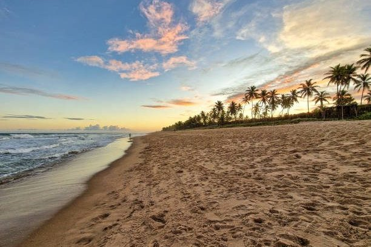
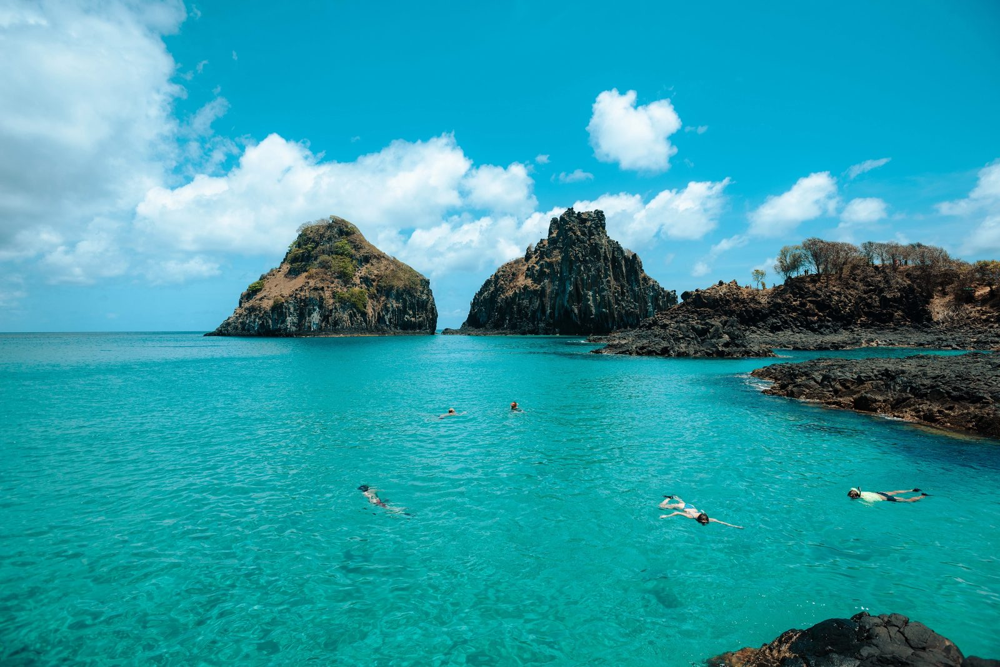
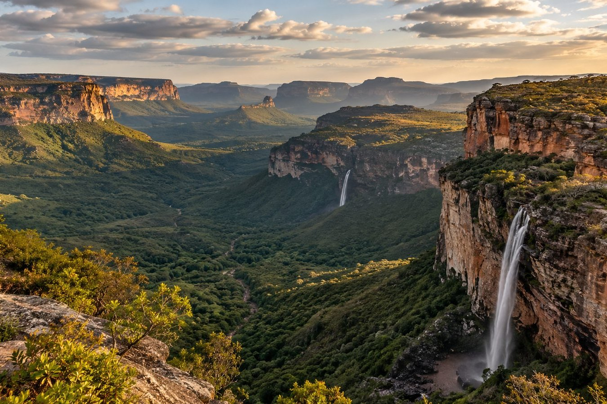

BRASIL
Praia do Forte

Restaurantes, atividades ao ar livre e belas praias.
Conhecer roteiro
Viagens que começam com um destino e terminam em histórias.
BRASIL

Restaurantes, atividades ao ar livre e belas praias.
Conhecer roteiroBRASIL

Cachoeiras, cânions e caminhos pelo coração da Bahia.
Conhecer roteiroA TripWay é uma empresa de viagens que busca facilitar a descoberta de novos destinos e experiências. Nosso objetivo é ajudar viajantes a conhecer diferentes lugares, encontrar opções de viagem e planejar momentos especiais de forma simples e prática.